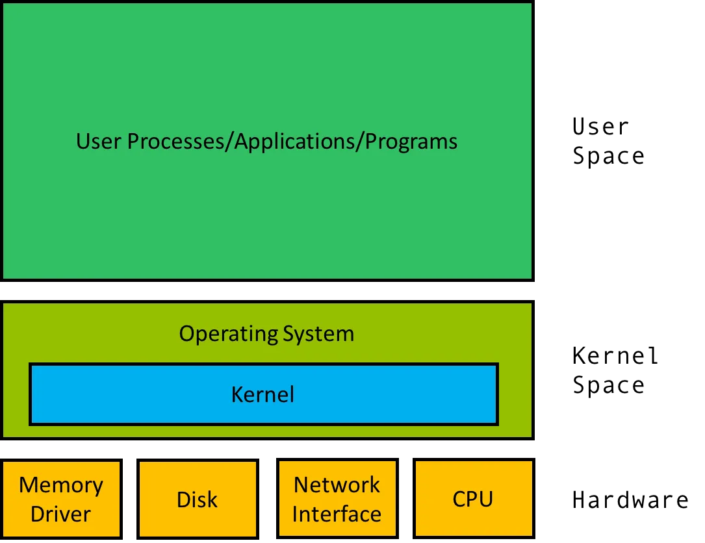
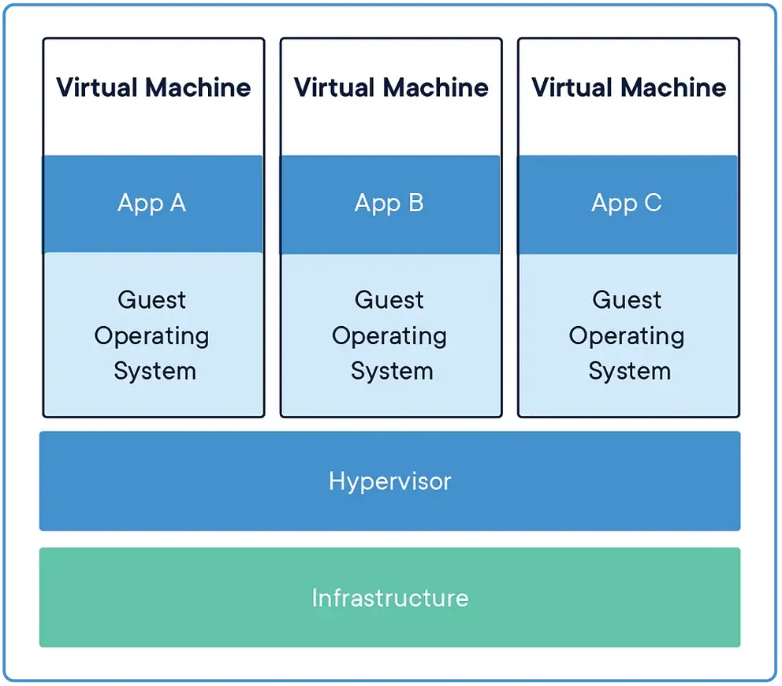
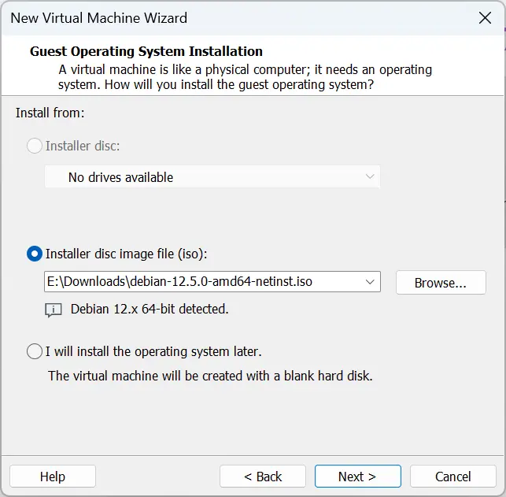
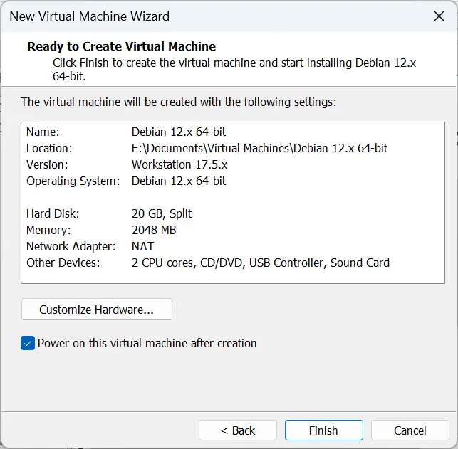
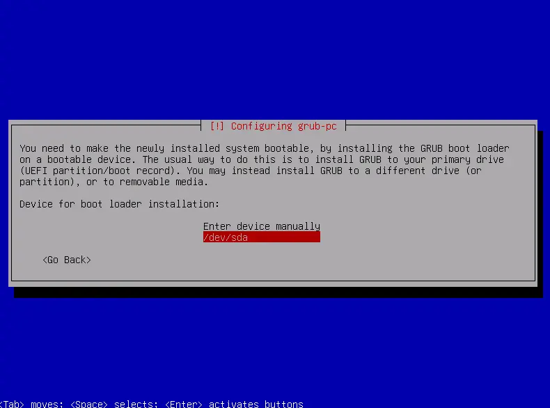
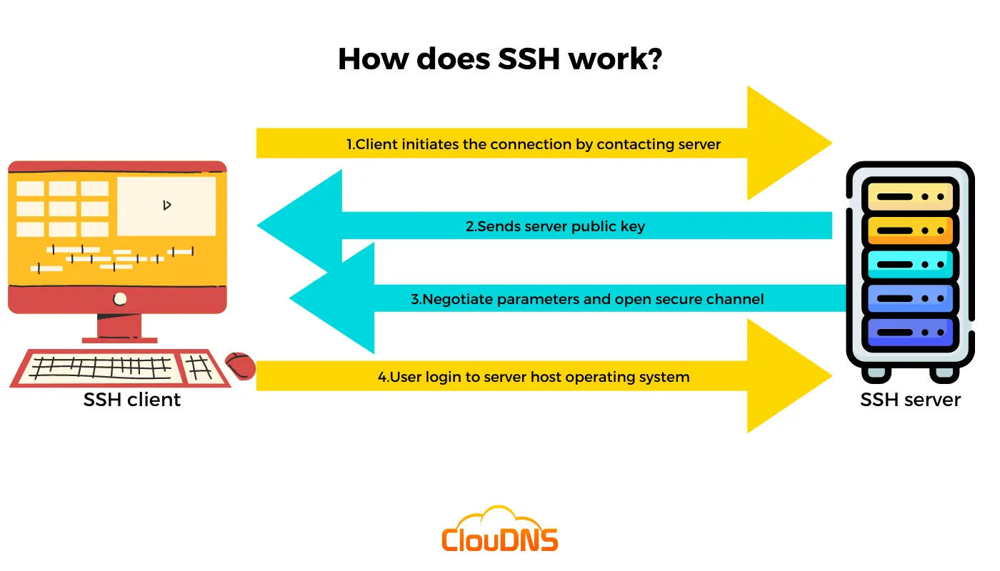

Lab 0: Linux Crash Course¶
To help students get accustomed to reading English documentation, this lab will be conducted entirely in English.
In the fields of Linux and HPC, a significant amount of software and hardware infrastructure is collaboratively developed by people from around the world. English serves as a crucial medium for communication. In the future, you will encounter well-known software projects such as NumPy, PyTorch, OpenMP, and MPI. While using these tools, you will inevitably need to read their documentation to solve problems, and these documents are often written in English. To help students get accustomed to reading English documentation, this lab will be conducted entirely in English.
Of course, we understand that reading lengthy English documents can be challenging. Therefore, we recommend students download and configure the Immersive Translate browser extension to assist with reading.
Similarly, when installing the system later in this lab, we also require selecting the English language pack.
Don't worry, the rest of course labs will still provide documentation in Chinese.
If you encounter any issues while completing the lab or notice that some instructions in the lab documentation are outdated and need updating, feel free to raise them in the group or consult the TA.
About This Lab
Most students may have only heard of Linux but have never used it. To reduce the difficulties caused by unfamiliarity with the Linux environment when completing Lab 1, we have added this lab.
Through this lab, we aim to provide students with a consistent basic understanding of Linux and set up a uniform environment, laying the groundwork for subsequent labs.
This lab is not included in the evaluation of the HPC 101 short-term course, and no lab report is required. Answers are directly provided after the questions.
If you complete this lab, you only need to provide a few screenshots:
- Task 1.1: Hash result
- Task 2.1:
nanoscreenshot - Task 3.2: SSH connection screenshot
- Task 5.2: SSH connection screenshot
- Task 6.1: Coding agent installation and first conversation screenshot
If you already have a deep understanding of Linux or are currently using a Linux system and are familiar with the content of this lab, you can skip reading the content and directly complete the tasks.
Tasks¶
- Obtain a Linux Virtual Machine
- Install a hypervisor on your computer
- Create a new virtual machine in the hypervisor
- Install a Linux distribution in the virtual machine
- Linux Basics
- Command Line Interface (CLI)
- Linux File System
- Package Management
- Remote Access
- Network Basics
- SSH
- More on Linux
- Users and Permissions
- Environment Variables
- Git
- Register a ZJU Git account
- Configure Public Key
- Clone a Repository
- AI Agent
- What is an AI Coding Agent
- Installation
- Basic Usage
- Skills and MCP
Before You Start¶
- Read this presentation or watch this video.
- Make sure you can access GitHub, Google and Stack Overflow.
Obtain a Linux Virtual Machine¶
OS and Kernel¶
{kind=link}

An operating system (OS) is system software that manages computer hardware, software resources, and provides common services for computer programs. The operating system is a vital component of the system software in a computer system.
A kernel is a computer program that is the core of a computer's operating system, with complete control over everything in the system. It is the "lowest" level of the OS.
Linux¶
Linux is a family of open-source Unix-like operating systems based on the Linux kernel, an operating system kernel first released on September 17, 1991, by Linus Torvalds. Linux is typically packaged in a Linux distribution.
Linux is a popular choice for developers and system administrators due to its flexibility and open-source nature. Linux is also widely used in the HPC field due to its high performance and scalability.
🎉 Good Luck! You are a Linux User now!
We want to show you that learning Linux is not hard and getting Linux is very easy. Linux runs everywhere, even in your browser.
Don't be afraid, the black screen above is an emulator using Web Assembly technology. It runs Linux kernel 6.8.12 (Try typing uname -a to check it out!) with Buildroot environment (which contains a collection of basic Linux command line tools).
You can try common Linux commands here, like ls, cd, cat, echo, pwd, uname, date, top, ps, clear, and exit.
Good job! Now you're a true Linux user. You can go on and finish this lab.
Linux distributions¶
What is Linux distribution? A Linux distribution (or Linux distro) is essentially a collection of software packages and configurations that are used to create a complete Linux operating system. They both use the Linux kernel, but might have different out-of-the-box configurations and user applications.
There are many Linux distributions available, each with its own strengths and weaknesses. Here are some popular choices:
- Ubuntu: A popular choice for beginners due to its ease of use, large community support, and compatibility with many hardware devices.
- Debian: Known for its stability and security.
- Fedora: A community-driven Linux distribution sponsored by Red Hat.
- Arch Linux: A lightweight and flexible Linux distribution that follows the "rolling release" model.
In HPC and cloud computing, Debian is a popular choice due to its stability and security.
We recommend using Debian for this course.
Task 1.1: Download and verify the latest textonly version of Debian ISO image from ZJU Mirrors
Follow the link to the Debian CD image download page: ZJU Mirrors.
Index of /debian-cd/
Parent directory/
13.5.0/ 2026/05/17 03:43:13
13.5.0-live/ 2026/05/17 03:43:13
current/ 2026/05/17 03:43:13
current-live/ 2026/05/17 03:43:13
project/ 2005/05/24 00:50:12
ls-lR.gz 2026/05/27 01:12:01
We need you to download the textonly version.
Don't know how to find correct download link from the above webpage? Read this guide: Your guide to Debian iso downloads.
For MacBook users with M series processors
You need to download the arm64 version of Debian, but not the debian-mac- version under amd64 directory.
The download link should look like this: https://mirrors.zju.edu.cn/debian-cd/current/amd64/iso-cd/debian-13.5.0-amd64-netinst.iso.
Quick questions:
- What is the difference between
debian-13.5.0-amd64-netinst.isoand thedebian-13.5.0-amd64-DVD-1.iso? - What is the difference between the
amd64andarm64versions?
Check your answer
- The
netinstversion is a small ISO image that contains only the necessary files to start the installation. TheDVD-1version is a large ISO image that contains desktop environments, applications, and other software. amd64is the 64-bit version for x86-64 processors, whilearm64is the 64-bit version for ARM processors. For example, Windows laptops usually use x86-64 processors, while latest MacBooks use ARM processors.
Verify the integrity of the downloaded ISO image. This is to ensure the ISO image is not corrupted or modified during the download process.
You can use:
sha256sumon Linux:sha256sum debian-13.5.0-amd64-netinst.isocertutilon Windows:certutil -hashfile debian-13.5.0-amd64-netinst.iso SHA256shasumon macOS:shasum -a 256 debian-13.5.0-amd64-netinst.iso
Show the result of your verification, and compare it with the result in SHA256SUMS file under the same directory as the ISO image.
If they are the same, then you are good to go.
Virtual Machine¶
More on Virtualization
If you are interested in virtualization and cloud computing, you can watch the Cloud·Explained video series to learn the related concepts as an introduction.
A virtual machine (VM) is a software-based emulation of a computer. By running a VM on your computer, you can run multiple operating systems on the same hardware. This is useful for testing software, running legacy applications, and learning new operating systems.
{kind=link}

Hypervisors are software that creates and runs virtual machines.
Two types of hypervisors
- Type 1 hypervisor: Runs directly on the host's hardware to control the hardware and to manage guest operating systems. Examples include VMware ESXi, Microsoft Hyper-V, and Xen.
- Type 2 hypervisor: Runs on a conventional operating system just like other computer programs. Examples include VMware Workstation, Oracle VirtualBox, and Parallels Desktop.
Usually, we use Type 2 hypervisors for personal use. There are many Type 2 hypervisors available, such as VMware Workstation, Oracle VirtualBox, and Parallels Desktop.
You can choose whatever hypervisor you like. In this course, we recommend using VMware Workstation Pro on Windows and Linux, or VMware Fusion on macOS. They are free for personal use since May 13, 2024.
{kind=link}
Task 1.2: Download and install VMware Hypervisor
Watch this video to learn how to download and install VMware Workstation: VMware Workstation Pro is Now FREE (How to get it)
(When filling out the download form, you can use any information like address, etc. It's common for large companies to have such tedious download processes 😵.)
Task 1.3: Create a new virtual machine and install Debian
Please read the installation instructions carefully.
If the following instructions don't mention a specific step, leave it as default.
Select the downloaded Debian ISO image as the installation media. Create a new virtual machine.
{kind=link}

Here is my configuration:
{kind=link}

Select the downloaded Debian ISO image as the installation media. Create a new virtual machine.
{kind=link}
Here is my configuration:
{kind=link}
Run the virtual machine and install Debian. (We recommend to choose Install but not Graphical install.)
{kind=link}
Please choose English as the language.
{kind=link}
You can change hostname, domain name, etc. as you like.
Don't set a root password. Read the text on the screen carefully.
If you leave this empty, the root account will be disabled and the system's initial user will be given the power to become root using the
sudocommand.
So, if you set a root password, you will need to add yourself to the sudo group later manually.
{kind=link}
Then set up your user account. Use the entire disk for the installation.
{kind=link}
Configure the package manager. Choose enter information manually and set the mirror to mirrors.zju.edu.cn.
{kind=link}
{kind=link}
Notice in the Software selection step, you need to select SSH server and standard system utilities, and cancel the selection of any other options. The text at the bottom of the screen will tell you how to navigate the menu.
{kind=link}
In the Configuring grub-pc step, should choose /dev/sda as the device for boot loader installation. Otherwise, you may not be able to boot into the system.
{kind=link}

Installation finished. Usually you don't need to remove the installation media manually because the virtual machine will try to boot from the disk first.
{kind=link}
After rebooting, you can log in with the user account you created.
{kind=link}
Linux Basics¶
Command Line Interface (CLI)¶
Read The Linux command line for beginners - Ubuntu. Begin with section 1 and stop at section 5.
Task 2.1: Answer the following questions
- What is terminal, shell and prompt? Find definitions from the article.
- What commands did you learn from the article?
- Try to learn
nano. Use it to create a file and write some text.
Check your answer
- Answers:
- Terminal: They would just send keystrokes to the server and display any data they received on the screen.
- Shell: By wrapping the user’s commands this “shell” program, as it was known, could provide common capabilities to any of them, such as the ability to pass data from one command straight into another, or to use special wildcard characters to work with lots of similarly named files at once.
- Prompt: That text is there to tell you the computer is ready to accept a command, it’s the computer’s way of prompting you.
-
Examples:
-
Show your screenshot of using
nano.
Linux File System¶
Watch Linux File System Explained!
Task 2.2: Answer the following questions
- Where is your location when you first log in?
- Where are the homes for executable binaries?
- What is
/usrstands for? - What's in
/usr/local/bin? - Where are the configuration files stored?
Check your answer
/home/username/bin,/sbin,/usr/bin,/usr/local/bin./usrstands for "Unix System Resources"./usr/local/binholds executables installed by the admin, usually after building them from source./etc
The Advanced Packaging Tool (APT)¶
Unlike Windows, where you need to download software from the internet and install it manually (this can be dangerous), Linux distributions have package managers that allow you to install software from a central repository.
For Debian-based distributions, the package manager is called apt. You can use apt to install, update, and remove software packages. For example, to install the htop package, you can run:
The first command updates the local package list from the repository, and the second command installs the htop package.
You can edit the /etc/apt/sources.list file to change the repository mirror. Read SourceList - Debian Wiki to learn more about the sources.list file.
If you are finding a package, you can use pkgs.org to search for the package and find the repository.
Why you need repository mirrors?
On the Internet, distance matters. In fact, it matters a lot. A long connection can cause high latency, slower connection speeds, and pretty much all the other classic issues that data has when it needs to travel across an ocean and half a continent. Therefore, we have these distributed mirrors. People connect to their physically nearest one (as it's usually the fastest -- there are some exceptions) for the lowest latency and highest download speed.
Task 2.3: Answer the following questions
One student encountered an error when running sudo apt update. The error message is:
Ign:1 cdrom://[Debian GNU/Linux 11.0.0 _Bullseye_ - Official amd64 DVD Binary-1 20210814-10:04] bullseye InRelease
Err:2 cdrom://[Debian GNU/Linux 11.0.0 _Bullseye_ - Official amd64 DVD Binary-1 20210814-10:04] bullseye Release
Please use apt-cdrom to make this CD-ROM recognized by APT. apt-get update cannot be used to add new CD-ROMs
Hit:3 <http://security.debian.org/debian-security> bullseye-security InRelease
Hit:4 <http://deb.debian.org/debian> bullseye InRelease
Hit:5 <http://deb.debian.org/debian> bullseye-updates InRelease
Reading package lists... Done
E: The repository 'cdrom://[Debian GNU/Linux 11.0.0 _Bullseye_ - Official amd64 DVD Binary-1 20210814-10:04] bullseye Release' does not have a Release file.
N: Updating from such a repository can't be done securely, and is therefore disabled by default.
N: See apt-secure(8) manpage for repository creation and user configuration details.
And here is the content of the /etc/apt/sources.list file:
deb cdrom:[Debian GNU/Linux 11.0.0 _Bullseye_ - Official amd64 DVD Binary-1 20210814-10:04] bullseye main
What is the problem? How to solve it?
Check your answer
The problem is that the cdrom repository is not available. You can remove the cdrom repository from the /etc/apt/sources.list file and add the correct repository. Then run sudo apt update again.
One student can't install the nvtop package. The error message is:
Reading package lists... Done
Building dependency tree... Done
Reading state information... Done
E: Unable to locate package nvtop
And here is the content of the /etc/apt/sources.list file:
deb http://deb.debian.org/debian bullseye main
deb http://deb.debian.org/debian bullseye-updates main
deb http://security.debian.org/debian-security bullseye-security main
What is the problem? How to solve it?
Hint: use pkgs.org to search for the package's component.
Check your answer
The problem is that the nvtop package is not available in the main component of the repository. You can add the correct repository to the /etc/apt/sources.list file and run sudo apt update again.
One student can't install the htop package. The error message is:
Reading package lists... Done
Building dependency tree... Done
Reading state information... Done
E: Unable to locate package htop
And here is the content of the /etc/apt/sources.list file:
Types: deb
URIs: <https://mirrors.zju.edu.cn/debian/>
Suites: trixie trixie-updates trixie-backports
Components: main contrib non-free non-free-firmware
Types: deb
URIs: <https://mirrors.zju.edu.cn/debian-security/>
Suites: trixie-security
Components: main contrib non-free non-free-firmware
Signed-By: /usr/share/keyrings/debian-archive-keyring.gpg
What is the problem? How to solve it?
Check your answer
For Deb822-style Format sources, each file needs to have the .sources extension. So you need to rename the file to /etc/apt/sources.list.d/trixie.sources and run sudo apt update again.
Access the Virtual Machine using SSH¶
Network Basics¶
Do you know the following concepts?
- IP address
- MAC address
- Subnet mask
- Gateway
- Port
- Port forwarding
If you are not familiar with these concepts, watch the following video to learn more about network:
Network in Virtual Machines¶
Watch this video to understand network in the virtual machines: 虚拟机网络模式.
Task 3.1: Ping the virtual machine
Check if the network mode of the virtual machine is set to NAT.
{kind=link}
Start the virtual machine and log in. Use the ip addr command to find the IP address of the virtual machine.
{kind=link}
From the screenshot, the virtual machine has two network interfaces: ens160 and lo. The latter is the loopback interface, and the former is the network interface used to connect to the network. We can see that the IP address of the virtual machine is 172.16.39.129.
Open a terminal on your host machine and ping the virtual machine.
Replace IP_ADDRESS with the IP address of the virtual machine.
The correct output should look like this:
SSH¶
Secure Shell (SSH) is a cryptographic network protocol for operating network services securely over an unsecured network. The best-known example application is for remote login to computer systems by users.
Asymmetric Encryption
SSH uses asymmetric encryption to secure the connection between the client and the server. In asymmetric encryption, two keys are used: a public key and a private key. The public key is used to encrypt the data, and the private key is used to decrypt the data.
When you connect to an SSH server, the server sends its public key to the client. The client uses this public key to encrypt a random session key and sends it back to the server. The server uses its private key to decrypt the session key and establish a secure connection.
The public key is shared with others, while the private key is kept secret.
For more information, watch this video: Asymmetric Encryption - Simply explained
{kind=link}

Task 3.2: Connect to the virtual machine using SSH
To use SSH, you need to install an SSH client on your computer. On Linux and macOS, the SSH client is usually pre-installed. On Windows, you can follow the instructions Get started with OpenSSH for Windows - Microsoft to install the OpenSSH client.
You also need to install an SSH server on the virtual machine. On Debian-based distributions, you can install the openssh-server package:
After installing the SSH server, you can use the ssh command to connect to the virtual machine:
Replace username with your username on the virtual machine and IP_ADDRESS with the IP address of the virtual machine.
It will ask you to enter the password of the user account. After entering the password, you will be logged in to the virtual machine.
{kind=link}
Show the screenshot of your successful connection.
Now you can copy and paste commands to this terminal. You can also use the scp command to copy files between your computer and the virtual machine. You can also connect your VSCode to the virtual machine using the Remote-SSH extension, but don't rely on it too much.
More on Linux¶
Users and Permissions¶
Watch this video to learn about:
- Users and Groups: Linux Crash Course - Managing Users
- Permissions: Linux File Permissions in 5 Minutes | MUST Know!
Environment Variables¶
Read this article to learn about environment variables: How to Set and List Environment Variables in Linux.
Task 4.1: Answer the following questions
- What is the
$HOMEenvironment variable used for? What is the value of$HOMEfor you and the root user? - What is the difference between the
chmodandchowncommands? - What is the difference between the
rwxpermissions for a file and a directory?
Check your answer
- Answers:
- The
$HOMEenvironment variable is used to store the path to the current user's home directory. - The value of
$HOMEfor you is/home/username, and the value of$HOMEfor the root user is/root.
- The
chmodis used to change the permissions of a file or directory, whilechownis used to change the owner of a file or directory.- For a file,
rwxpermissions mean read, write, and execute permissions. For a directory, the execute permission is used to list the contents of the directory.
Git¶
Git is a distributed version control system that is widely used in software development. It allows multiple developers to work on the same project simultaneously and track changes to the codebase over time.
{kind=link}
Do the following tasks on your host machine.
Register a ZJU Git account¶
Task 5.1: Go to ZJU Git and register an account.
Configure Public Key¶
Task 5.2: Generate an SSH key and add it to your ZJU Git account.
Follow this guide to generate an SSH key: Generating a new SSH key and adding it to the ssh-agent.
Please take care of your private key, don't share it with anyone. And for the public key, you can share it with anyone who needs it.
We strongly suggest you to use ed25519 algorithm instead of rsa for better security with shorter key length, unless you want to end up being like this when sharing your SSH public key:
{kind=link}
Add the public key to your ZJU Git account:
{kind=link}
This public key will be used to access the clusters in the future.
Install Git¶
Task 5.3: Install Git on your virtual machine.
On Debian-based distributions, you can install Git using the following command:
On Windows, you can download the Git installer from Git for Windows and follow the installation instructions.
On macOS, you can install Git using Homebrew:
After installing Git, you can check the version of Git to verify the installation:
You should see the version number of Git printed, like:
AI Agent¶
In the previous sections, you have been typing commands manually in the terminal: reading documentation, installing packages, editing configuration files, and running programs. This is the traditional workflow that every developer follows.
In recent years, a new kind of tool has emerged: AI coding agents. Unlike simple chatbots (such as ChatGPT's web interface) that only generate text responses, AI coding agents can directly interact with your computer. They read and write files, run terminal commands, search the web, and manage version control. They serve as intelligent assistants that understand your codebase and can take real actions on your behalf.
Why learn AI agents in an HPC course?
In Lab 1 and beyond, you will face complex tasks like debugging Makefile errors, understanding unfamiliar source code, and configuring multi-node clusters. An AI coding agent can help you:
- Quickly understand what a 500-line
configurescript does. - Identify why
makeis failing and suggest a fix. - Generate boilerplate configuration files (like
HPL.datorhostfile). - Explain error messages you encounter during compilation.
You still need to understand what is happening, but you do not have to figure out everything from scratch.
Introduction¶
A traditional chatbot takes your message and returns text. An AI coding agent combines a large language model (LLM) with a set of tools that allow it to interact with the real world:
| Tool | What It Does |
|---|---|
| Read | Opens and reads any file on your computer |
| Edit | Makes precise, targeted changes to existing files |
| Write | Creates brand new files from scratch |
| Bash | Runs terminal commands (build, test, install, git, etc.) |
| Web Search | Searches the internet for up-to-date information |
When you give an AI coding agent an instruction like "fix the compilation error in my Makefile," it reads the Makefile, identifies the problem, edits the file, and runs make again to verify the fix works. This read-think-act loop is what distinguishes an agent from a chatbot.
flowchart LR
A[You: natural language instruction] --> B[Agent: read files & context]
B --> C[Agent: think & plan]
C --> D[Agent: take action]
D --> E[Agent: observe result]
E -->|iterate| B
E -->|done| F[Report back to you]There are many AI coding agents available today, such as OpenCode, Codex CLI, Gemini CLI, GitHub Copilot, Cursor, and Windsurf. They share the same core idea but differ in interface, model provider, and specific features. In this lab, we use OpenCode as a representative example. It is an open-source agentic AI coding agent that runs in your terminal.
Read the official getting started guide to get an overview: Intro - OpenCode Docs.
Get API Key¶
Our course provides free access to several LLM APIs (such as GLM and DeepSeek) that you can use with OpenCode. To get your API key, log in to our New API Platform with your ZJU Git account, and then go to the "Token Management" section to create a new API key.
Our New API platform supports two types of LLM protocol:
- OpenAI:
https://clusters.zju.edu.cn/newapi/v1 - Anthropic:
https://clusters.zju.edu.cn/newapi
clusters.zju.edu.cn can be accessed both in and out of campus network.
Installation¶
Task 6.1: Install and try a coding agent
We'll use OpenCode in this example. You may complete this task with any mainstream coding agent, such as Codex CLI, Gemini CLI, GitHub Copilot, Cursor, Windsurf, or other tools with similar agentic coding capabilities.
If you choose another coding agent, follow its official installation guide instead of the OpenCode-specific steps below.
Follow instructions from OpenCode | Download to install OpenCode on your computer. When it's done, close and reopen your terminal, then run:
You should see a version number printed.
Follow instructions from Providers | OpenCode to configure LLM providers for opencode.
For API Keys fetched from our New API platform, we recommend using OpenAI API. Example:
{
"$schema": "https://opencode.ai/config.json",
"model": "zjusct/glm-5.2",
"provider": {
"zjusct": {
"npm": "@ai-sdk/openai-compatible",
"name": "ZJUSCT New API",
"options": {
"baseURL": "https://clusters.zju.edu.cn/newapi/v1",
"apiKey": "<your-api-key>"
},
"models": {
"glm-5.2": {},
}
}
}
}
You can find more details about configuring LLM providers in the official documentation:
Navigate to a project folder (or create one for experimenting):
Start OpenCode:
You should see GLM-5.2 selected as the active model.

That > is your prompt. The agent is waiting for you to type something.
Try typing the following prompts one by one and observe what the agent does:
-
Ask about the current directory:
The agent will read the directory and show you the list of files.
-
Ask it to create a script:
The agent will show you the file content it wants to create and ask for permission. Select
Yesand press Enter to approve. -
Ask it to run the script:
Again, it will ask for permission before executing the command. Select
Yesand press Enter to approve.
Show a screenshot of your conversation with the coding agent, including the created file and its output.
Example: Agent Basic Usage
Here are the most common interaction patterns you will use in this course:
Asking questions about code:
> Explain what the configure script does in this project.
> What dependencies does this Makefile need?
> What does the -O2 flag do in gcc?
Editing files:
> Add error handling to the main function in server.c
> Change the optimization flag from -O0 to -O2 in the Makefile
> Fix the linker path in Make.Linux_PII_FBLAS
Running commands:
> Compile this project and show me any errors.
> Run the test suite and summarize the results.
> Check if OpenMPI is installed correctly.
Git workflows:
> Show me what changed since the last commit.
> Create a commit with a descriptive message for the current changes.
> What does the most recent commit do?
Debugging:
Slash Commands¶
During an OpenCode session, type / to see a list of available commands. They are the primary interface for controlling the agent's behavior. Here are the most useful ones:
| Command | What It Does |
|---|---|
/help |
Shows the help dialog and available commands |
/new (/clear) |
Starts a fresh session and frees context window space |
/compact (/summarize) |
Compresses the conversation into a summary to reclaim context |
/models |
Lists or switches the AI model mid-session |
/init |
Generates or updates an AGENTS.md project memory file |
/undo / /redo |
Reverts (or restores) your last message and any file changes |
/sessions (/resume) |
Lists and switches between past sessions |
/share |
Creates a shareable link to the current session |
/connect |
Adds and configures an LLM provider |
You can also define your own custom commands by placing Markdown files in .opencode/commands/ or ~/.config/opencode/commands/. See Commands - OpenCode Docs for details.
Context window and /compact
OpenCode has a context window, which you can think of as a shared whiteboard between you and the agent. Everything you discuss, every file it reads, and every command output goes onto this whiteboard. But the whiteboard has a fixed size. When it gets full, OpenCode may start "forgetting" earlier parts of your conversation.
Use /compact to compress your conversation (keeping the essence but freeing space), or /new to completely wipe it and start a fresh session.
In most cases, OpenCode can automatically manage the context without needing a manual /compact.
Extending Agent: Skills and MCP¶
OpenCode is not limited to its built-in capabilities. It can be extended through Skills and MCP (Model Context Protocol).
Skills¶
A Skill is a Markdown file that teaches OpenCode how to perform a specific task. When the agent sees that a skill is available (by reading its description), it loads the corresponding skill file on demand and follows the instructions inside.
For example, you might create a skill called check-system-status that instructs the agent to check system resource usage and status. The skill file would look like this:
---
name: check-system-status
description: Check system resources usage and status
---
When invoked, do the following:
1. Run `top -b -n 1` to get a snapshot of current system resource usage.
2. Run `df -h` to check disk space usage.
3. Summarize the results in a human-readable format, highlighting any potential issues (e.g., high CPU usage, low disk space).
After creating this file, you can ask the agent to "check the system status" in any OpenCode session and it will load the skill and execute these steps.
Skills can be stored in several locations:
| Location | Path | Applies To |
|---|---|---|
| Global | ~/.config/opencode/skills/<name>/SKILL.md |
All your projects |
| Project | .opencode/skills/<name>/SKILL.md |
This project only |
OpenCode also discovers Claude-compatible paths (.claude/skills/) and .agents/skills/, so skills written for other agents work out of the box.
MCP¶
MCP (Model Context Protocol) is an open standard that allows AI agents to connect to external tools and services in a standardized way. An MCP server is a separate process that exposes a set of tools (APIs) that an AI agent can call. By adding an MCP server to OpenCode, you can give it access to new capabilities without needing to teach it through skills.
The problem MCP solves
Before MCP, every agent had its own proprietary integration system. If you wanted to connect an AI agent to a database, you had to write a custom integration for that specific agent. If you switched to a different agent, you had to rewrite the integration from scratch.
MCP defines a standard interface: you write your tool once, and any MCP-compatible agent can use it. This is similar to how USB solved the proliferation of proprietary connectors for peripherals.
Adding an MCP server in your opencode.json (or opencode.jsonc):
{
"$schema": "https://opencode.ai/config.json",
"mcp": {
"filesystem": {
"type": "local",
"command": ["npx", "-y", "@modelcontextprotocol/server-filesystem", "/home/user/projects"],
"enabled": true
},
"my-remote-server": {
"type": "remote",
"url": "https://mcp.example.com/endpoint"
}
}
}
Managing MCP servers from the command line:
opencode mcp list # List all configured servers and their auth status
opencode mcp auth <name> # Authenticate with a remote server
opencode mcp logout <name> # Remove stored credentials
opencode mcp debug <name> # Diagnose connection and OAuth issues
Once an MCP server is added, its tools appear in your OpenCode session automatically. For instance, if you add a database MCP server, OpenCode gains the ability to run SQL queries when you ask questions like "show me all users who registered last week." Refer to a server by name in your prompt (e.g. use the filesystem tool) to nudge the agent toward using it.
Example: Using the GitHub MCP server
The official GitHub MCP Server allows OpenCode to interact with GitHub. It supports creating issues, reading pull requests, searching repositories, and more.
Here is how to add it (you may need to have Node.js installed for this). Add it to your opencode.json:
{
"$schema": "https://opencode.ai/config.json",
"mcp": {
"github": {
"type": "local",
"command": ["npx", "-y", "@modelcontextprotocol/server-github"],
"enabled": true,
"environment": {
"GITHUB_PERSONAL_ACCESS_TOKEN": "ghp_..."
}
}
}
}
You will need a GitHub personal access token. If you have a GitHub account, you can click here to generate one.
After this, OpenCode gains GitHub-related tools. You can then ask things like:
Codex CLI¶
If you want to use Codex CLI instead of OpenCode, you can read the following part.
Installation¶
Open a terminal on your machine and run the installer for your operating system:
macOS / Linux:
Windows (PowerShell):
If you see any network error during installation, you can install Node.js and then run the following command to install Codex CLI:
Close and reopen your terminal, then run:
You should see a version number printed, like:
If you see that, installation succeeded.
Configuration¶
To use our New API Platform, you can edit the configuration file ~/.codex/config.toml and add the following content:
model_provider = "zjusct"
[model_providers.zjusct]
name = "zjusct"
base_url = "https://clusters.zju.edu.cn/newapi/v1"
wire_api = "responses"
experimental_bearer_token = "sk-xxxxxxx" # your API key
requires_openai_auth = false